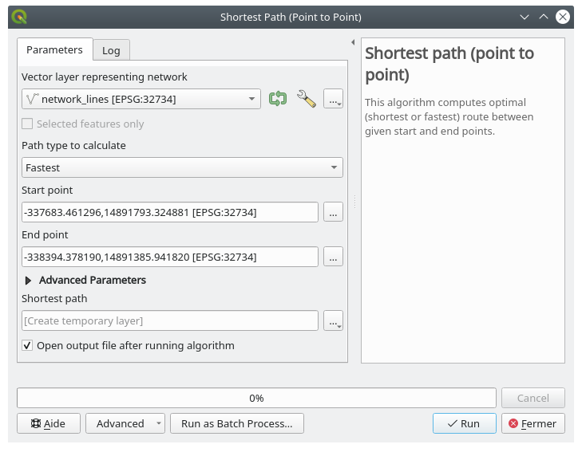
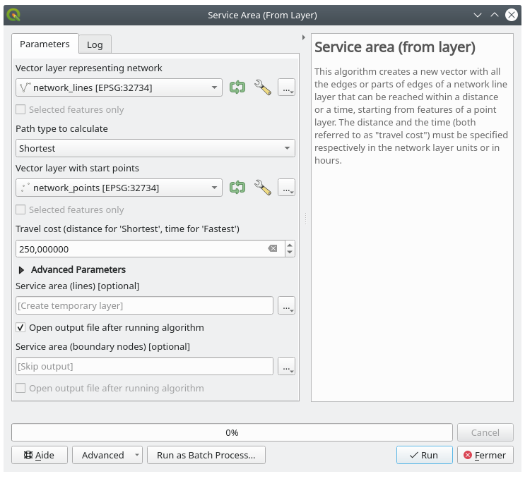

6.3. သင်ခန်းစာ- လမ်းကြောင်းကွန်ယက်ဆိုင်ရာ ဆန်းစစ်လေ့လာခြင်း (Lesson: Network Analysis)
Point နှစ်ခုအကြား အတိုဆုံးအကွာအဝေးကို တွက်ချက်ခြင်းသည် အသုံးများသော GIS လုပ်ဆောင်မှုတစ်ခုဖြစ်ပါသည်။ ထိုသို့လုပ်ဆောင်ရန် tool များကို Processing Toolbox ထဲတွင် တွေ့နိုင်ပါသည်။
ဤသင်ခန်းစာအတွက် ရည်မှန်းချက်- Network analysis algorithm များကို အသုံးပြုတတ်စေရန်
6.3.1. ★☆☆ လိုက်လုပ်ကြည့်ပါ- Tool များနှင့် Data များ (Follow Along: The Tools and the Data)
Network analysis algorithm များအားလုံးကို menu ထဲတွင် ရှာဖွေနိုင်ပါသည်။ Tool များစွာ ရှိသည်ကို မြင်တွေ့နိုင်ပါသည်-

exercise_data/network_analysis/network.qgz project ကို ဖွင့်ပါ။ Layer နှစ်ခု ပါဝင်ပါသည်-
network_pointsnetwork_lines
network_lines layer တွင် style တစ်ခုပါရှိပြီးသားဖြစ်ပြီး လမ်းကြောင်းကွန်ယက်ကို နားလည်နိုင်စေရန် ကူညီပေးပါသည်။

Shortest path tool များသည် အောက်ပါတို့ကို ပေးထားပါက ကွန်ယက်တစ်ခု၏ point နှစ်ခုအကြား အတိုဆုံး သို့မဟုတ် အမြန်ဆုံး လမ်းကြောင်းကို တွက်ချက်ပေးနိုင်ပါသည်-
မြေပုံပေါ်တွင် ရွေးချယ်ထားသော စမှတ် နှင့် ဆုံးမှတ် များ
မြေပုံပေါ်တွင် ရွေးချယ်ထားသော စမှတ် နှင့် point layer တစ်ခုမှယူထားသော ဆုံးမှတ် များ
Point layer တစ်ခုမှယူထားသော စမှတ်များနှင့် မြေပုံပေါ်တွင် ရွေးချယ်ထားသော ဆုံးမှတ်
စလုပ်ကြည့်ရအောင်။
6.3.2. ★☆☆ အတိုဆုံးလမ်းကြောင်းကို တွက်ချက်ပါ (point မှ point သို့) (Calculate the shortest path (point to point))
သည် မြေပုံပေါ်တွင် ကိုယ်တိုင်ရွေးချယ်ထားသော point နှစ်ခုအကြား အတိုဆုံးအကွာအဝေးကို တွက်ချက်ပေးပါသည်။
ဤဥပမာတွင် point နှစ်ခုအကြား အတိုဆုံး (အမြန်ဆုံး မဟုတ်) လမ်းကြောင်းကို တွက်ချက်ပါမည်။
Shortest path (point to point) algorithm ကိုဖွင့်ပါ
Vector layer representing network အတွက် network_lines ကိုရွေးပါ
Path type to calculate အတွက်
Shortestကိုသုံးပါအောက်ပါ point နှစ်ခုကို analysis အတွက် စမှတ် နှင့် ဆုံးမှတ်များအဖြစ် အသုံးပြုပါ-

Start point (x, y) ဘေးရှိ … ခလုတ်ကိုနှိပ်ပြီး ပုံထဲရှိ
Starting Pointဟုရေးထားသော တည်နေရာကို ရွေးပါ။ ရွေးချယ်မှုတိကျစေရန်အတွက် Snapping (တစ်ခုနှင့်တစ်ခုဆွဲကပ်ခြင်း) option များကို ဖွင့်ထားပါ။ Click နှိပ်လိုက်သော point ၏ ကိုဩဒိနိတ်များကို ထည့်သွင်းသွားမည်ဖြစ်သည်။End point (x, y) အတွက်
Ending pointဟုရေးထားသော တည်နေရာကိုရွေးပါRun ခလုတ်ကိုနှိပ်ပါ-

ရွေးချယ်ထားသော point များအကြား အတိုဆုံးလမ်းကြောင်းကိုပြသသော line layer အသစ်တစ်ခုကို ဖန်တီးပေးမည်ဖြစ်သည်။ ရလာဒ်ကို ပိုမိုမြင်နိုင်စေရန်
network_lineslayer ကို အမှန်ခြစ်ဖျောက်ထားပါ-
ရလာဒ် layer ၏ attribute ဇယားကို ဖွင့်ပါ။ စမှတ် ၏ကိုဩဒိနိတ်၊ ဆုံးမှတ်၏ ကိုဩဒိနိတ်နှင့် cost ဆိုသည့် field ၃ ခုပါဝင်ပါသည်။
Path type to calculate အဖြစ်
Shortestကိုရွေးချယ်ခဲ့သောကြောင့် cost ဆိုသည်မှာ တည်နေရာ နှစ်ခုအကြား အကွာအဝေး ကို layer ယူနစ်များဖြင့် ဖော်ပြခြင်းဖြစ်သည်။ယခုဥပမာတွင် ရွေးချယ်ထားသော point များအကြား အတိုဆုံး အကွာအဝေးသည်
1000မီတာ ဝန်းကျင်ဖြစ်ပါသည်-
ယခုဆိုလျှင် tool ကို မည်သို့အသုံးပြုရမည်ကို သိရှိပြီးဖြစ်ပါသည်၊ အခြား တည်နေရာများတွင် စမ်းသပ်ကြည့်ပါ။
6.3.3. ★★☆ မိမိကိုယ်တိုင်ကြိုးစားကြည့်ပါ- အမြန်ဆုံးလမ်းကြောင်း (Try Yourself: Fastest path)
ယခင်လေ့ကျင့်ခန်းမှ data များကိုသုံး၍ point နှစ်ခုအကြား အမြန်ဆုံးလမ်းကြောင်း ကို တွက်ချက်ရန် ကြိုးစားကြည့်ပါ။
စမှတ် မှ ဆုံးမှတ် သို့သွားရန် အချိန်ဘယ်လောက်လိုအပ်ပါသလဲ။
အဖြေ
ကိုဖွင့်ပြီး dialog တွင် အောက်ပါအတိုင်းဖြည့်ပါ-
 Path type to calculate တွင်
Fastestကိုရွေးပါ။Run ကိုနှိပ်ပြီး dialog ကိုပိတ်ပါ။
ရလာဒ် layer ၏ attribute ဇယားကိုဖွင့်ပါ။ cost field တွင် point များအကြား သွားလာရန် ကြာမြင့်ချိန် (နာရီ၏ အပိုင်းဂဏန်းအနေဖြင့်) ပါဝင်ပါသည်-

6.3.4. ★★☆ လိုက်လုပ်ကြည့်ပါ- အဆင့်မြင့်ရွေးချယ်စရာများ (Follow Along: Advanced options)
Network Analysis tool များအတွက် နောက်ထပ်ရွေးချယ်စရာများကို လုပ်ဆောင်ကြည့်ပါမည်။ ပြီးခဲ့သည့်လေ့ကျင့်ခန်း တွင် point နှစ်ခုအကြား အမြန်ဆုံး လမ်းကြောင်းကို တွက်ချက်ခဲ့ပါသည်။ သွားလာရန် ကြာမြင့်ချိန်သည် သွားလာသည့် အမြန်နှုန်း ပေါ်တွင် မူတည်ပါသည်။
ပြီးခဲ့သည့်လေ့ကျင့်ခန်းတွင် အသုံးပြုခဲ့သော layer များနှင့် စမှတ် ဆုံးမှတ် point များကို ပြန်လည်အသုံးပြုပါမည်။
Shortest path (point to point) algorithm ကိုဖွင့်ပါ
ယခင်ကလုပ်ဆောင်ခဲ့သည့်အတိုင်း Input layer ၊ Start point (x, y) နှင့် End point (x, y) တို့ကို ဖြည့်ပါ
Path type to calculate တွင်
Fastestကိုရွေးချယ်ပါAdvanced parameter menu ကိုဖွင့်ပါ
Default speed (km/h) တွင် default တန်ဖိုး
50မှ4သို့ပြောင်းပါ
Run ကိုနှိပ်ပါ
Algorithm ကိုလုပ်ဆောင်ပြီးနှင့်တပြိုင်နက် dialog ကိုပိတ်ပြီး ရလာဒ် layer ၏ attribute ဇယားကို ဖွင့်ပါ။
သင်ရွေးချယ်ခဲ့သော မြန်နှုန်း parameter အတိုင်း cost field တွင် တန်ဖိုးများပါဝင်မည်ဖြစ်သည်။ cost field တွင် နာရီအပိုင်းကိန်းများကို ဖတ်ရှုရလွယ်ကူသော မိနစ် တန်ဖိုးများသို့ ပြောင်းလဲပေးနိုင်ပါသည်။
 icon ကိုနှိပ်ပြီး field calculator ကိုဖွင့်ပါ
icon ကိုနှိပ်ပြီး field calculator ကိုဖွင့်ပါPath cost ကို minutes အနေဖြင့် သိမ်းဆည်းရန် field အသစ်တစ်ခု ထည့်သွင်းပါ။

ယခုဆိုလျှင် point တစ်ခုမှ တစ်ခုသို့ 4 km/h အမြန်နှုန်းဖြင့်သွားလျှင် အချိန် မိနစ်မည်မျှ ကြာမြင့်မည်ကို သိရှိနိုင်ပြီဖြစ်သည်။
6.3.5. ★★★ အမြန်နှုန်းကန့်သတ်ချက်ဖြင့် အတိုဆုံးလမ်းကြောင်း (Shortest path with speed limit)
Network analysis toolbox တွင် အခြား စိတ်ဝင်စားစရာရွေးချယ်စရာများရှိပါသည်။ အောက်ဖော်ပြပါမြေပုံကို ကြည့်ပါ-

လမ်းတစ်ခုချင်းစီအတွက် အမြန်နှုန်းကန့်သတ်ချက် ပေါ်မူတည်ပြီး အမြန်ဆုံး လမ်းကြောင်းကို သိလိုပါသည် (ဖော်ပြထားသော label များသည် km/h ဖြင့်အမြန်နှုန်းကန့်သတ်ချက်များဖြစ်သည်)။ အမြန်နှုန်းကန့်သတ်ချက်ကို ထည့်မတွက်ထားသော အတိုဆုံးလမ်းကြောင်းသည် ခရမ်းရောင် လမ်းကြောင်းဖြစ်ပါသည်။ သို့သော် ထိုလမ်းတွင် အမြန်နှုန်းကန့်သတ်ချက်သည် 20 km/h ဖြစ်ပြီး အစိမ်းရောင်လမ်းတွင် 100 km/h နှုန်းဖြင့် သွားနိုင်ပါသည်။
ပထမဆုံးလေ့ကျင့်ခန်းတွင် လုပ်ဆောင်ခဲ့သည့်အတိုင်း ကိုအသုံးပြုမည်ဖြစ်ပြီး စမှတ်နှင့်ဆုံးမှတ် point များကို ကိုယ်တိုင် ရွေးချယ်မည်ဖြစ်သည်။
algorithm ကိုဖွင့်ပါ
Vector layer representing network parameter အတွက် network_lines ကိုရွေးချယ်ပါ
Path type to calculate တွင်
Fastestကိုရွေးချယ်ပါယခင်ကလုပ်ဆောင်ခဲ့သည့်အတိုင်း Start point (x, y) နှင့် End point (x, y) ကိုရွေးချယ်ပါ
Advanced parameters menu ကိုဖွင့်ပါ
Speed Field parameter တွင် speed field ကိုရွေးချယ်ပါ။ ထိုသို့ရွေးချယ်ခြင်းဖြင့် algorithm သည် လမ်းတစ်ခုချင်းစီအတွက် အမြန်နှုန်းကန့်သတ်ချက်ကို ထည့်သွင်းစဉ်းစားမည်ဖြစ်သည်။

Run ခလုတ်ကိုနှိပ်ပါ
ရလာဒ်ကို ပိုမိုကောင်းမွန်စွာမြင်ရနိုင်ရန်
network_lineslayer ကိုပိတ်ထားပါ
မြင်တွေ့ရသည့်အတိုင်း အမြန်ဆုံးလမ်းကြောင်းသည် အတိုဆုံးလမ်းကြောင်းနှင့်သက်ဆိုင်မှုမရှိပါ။
6.3.6. ★★☆ Service area (layer မှ) (Service area (from layer))
algorithm သည် point layer တစ်ခုမှ သတ်မှတ်အကွာအဝေး သို့မဟုတ် သတ်မှတ်အချိန်တစ်ခုအတွင်း ရောက်ရှိနိုင်သော ဧရိယာများကိုရှာပါ ဆိုသည့်မေးခွန်းကို ဖြေရှင်းပေးနိုင်ပါသည်။
Note
နှင့် algorithm အတူတူဖြစ်ပါသည်၊ သို့သော် ၎င်းသည် မြေပုံပေါ်တွင် point ကို ကိုယ်တိုင်ရွေးချယ်နိုင်စေပါသည်။
network_points layer ၏ point တစ်ခုချင်းစီမှ ဘယ်လောက်ဝေးဝေးသွားနိုင်သည်ဆိုသည့် အကွာအဝေးကို 250 မီတာ ပေးထားပါ။
network_pointslayer မှလွဲ၍ ကျန် layer များအားလုံးကို အမှန်ခြစ်ဖြုတ်ထားပါalgorithm ကိုဖွင့်ပါ
Vector layer representing network အတွက်
network_linesကိုရွေးပါVector layer with start points အတွက်
network_pointsကိုရွေးပါPath type to calculate ထဲတွင်
ShortestကိုရွေးပါTravel cost parameter အတွက်
250ထည့်ပါ။Run ကိုနှိပ်ပြီး dialog ကိုပိတ်ပါ
 ရလာဒ် layer သည် point feature များမှ 250 မီတာအထိ ရောက်ရှိနိုင်သော အများဆုံးလမ်းကြောင်းကို ပြသပေးမည်ဖြစ်သည်-

{kind=link}
6.3.7. နိဂုံးချုပ် (In Conclusion)
ယခုဆိုလျှင် အတိုဆုံး နှင့် အမြန်ဆုံး လမ်းကြောင်း ပြဿနာများကို ဖြေရှင်းရန် Network analysis algorithm ကိုမည်သို့အသုံးပြုရမည်ကို သိရှိပြီးဖြစ်ပါသည်။
Vector layer data များတွင် spatial statistic (တည်နေရာဆိုင်ရာ စာရင်းအင်းအချက်အလက်) အချို့ကို လုပ်ဆောင်နိုင်ပြီဖြစ်ပါသည်။
6.3.8. နောက်ထပ် ဘာအကြောင်းအရာလဲ? (What’s Next?)
Vector dataset များတွင် spatial statistics algorithm များ မည်သို့လုပ်ဆောင်ရမည်ကို နောက်လာမည့် သင်ခန်းစာတွင် မြင်တွေ့ရမည်ဖြစ်သည်။